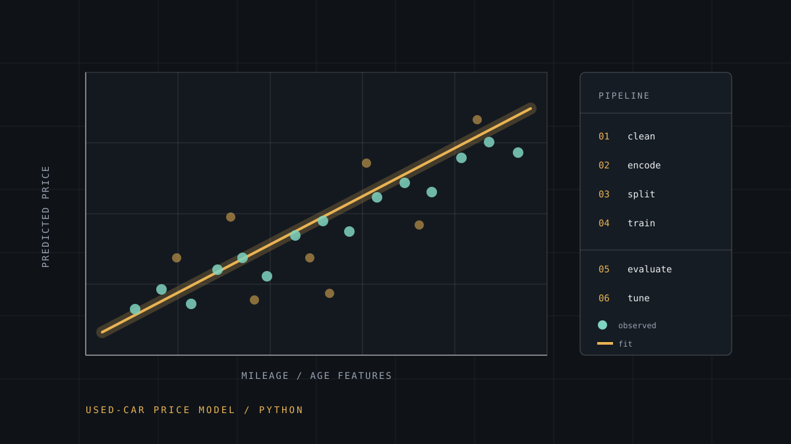

AI & Machine learning
Used-Car Price Prediction
A regression study in Python: turning messy vehicle listings into features, training a model, and (the harder part) deciding whether its predictions deserve to be believed.

- Role
- Sole analyst and developer
- Domain
- Supervised learning · regression
- Status
- Completed study
- Language
- Python
- Workflow
- Clean → encode → split → train → evaluate → tune
- Focus
- Feature engineering and evaluation honesty
- Related
- ScholarBridge (AI layer)
Problem
A used car's price depends on things that are obvious (age, mileage, condition) and things that are not: brand reputation, how a model has aged, whether a listing is for a desirable trim, how the local market feels about that body style. A buyer or seller without a dealer's intuition has to guess.
The task was to estimate a fair price from listing data, and to be honest about how much confidence that estimate deserves.
Why it mattered
Information asymmetry in informal vehicle markets is real: the person with better pricing data captures value, and everyone else negotiates from a guess. A model that reduces that gap even modestly is useful, but only if its error is known and disclosed. A price prediction presented with false confidence is worse than no prediction at all.
It also gave me a structured way into machine learning through a problem I could reason about, rather than a benchmark I had no intuition for.
My role
End to end: data acquisition, cleaning, feature engineering, modelling, evaluation and write-up.
- Profiled the dataset and documented every cleaning decision
- Engineered features: age rather than year, mileage-per-year rather than raw mileage, brand and body-style encodings
- Split the data, trained candidate models and tuned hyperparameters
- Evaluated with metrics chosen for the question, and analysed residual patterns
- Wrote up what the model can and cannot be trusted with
Technical approach
- Exploratory analysis first. Distributions, outliers and category frequencies before any model. Most of the wins in this project came from understanding the data, not from algorithms.
- Feature engineering over model selection. Converting model year to vehicle age and raw mileage to an annualised figure made relationships far more linear than feeding the raw columns ever would.
- Train/validation/test separation with stratification on price bands so the splits stayed comparable.
- Categorical handling that respects cardinality: low-cardinality categories encoded directly, high-cardinality ones grouped rather than one-hot into thousands of columns.
- Evaluation beyond a single number: mean absolute error for interpretability in the same units as the target, R² for explained variance, plus residual plots to see where the model fails.
Implementation
The decision I would defend hardest is separating cleaning from modelling. Every transformation was written as an explicit, reproducible step rather than a notebook cell run once and forgotten, so the same pipeline could be re-applied to the test set without leaking information from it.
- Fitted all preprocessing on training data only, then transformed validation and test sets, preventing the most common form of leakage
- Kept feature definitions in one place so a change to age calculation changed it everywhere
- Recorded a baseline prediction (median price) and required every model to beat it convincingly before being considered interesting
- Analysed residuals against vehicle age and brand to find systematic blind spots rather than just average error
Impact
This is a study, and I am treating it as one: the outcome is a working, reproducible Python pipeline and a clear-eyed write-up of where the model performs and where it degrades.
I am deliberately not publishing headline accuracy figures on this page. Metrics without the dataset, split strategy and evaluation protocol attached are marketing, not measurement. The numbers are in the write-up and available on request.
The direct transfer: it gave me the vocabulary and the scepticism I needed to build the AI features in ScholarBridge, where the cost of a confidently wrong answer is a student acting on bad information.
Challenges
- Messy real data. Missing values, inconsistent units, duplicated listings and categories spelled five different ways. The cleaning took materially longer than the modelling.
- Outliers that are correct. A very expensive car is not an error. Deciding which extreme values are noise and which are signal is a judgement call that changes the model.
- Leakage. Features that encode the target indirectly inflate results until you check them. Suspicion of your own best score is a professional habit worth building.
- Interpretability versus accuracy. A marginally better model that nobody can interrogate is a poor trade in a domain where people ask why.
What I learned
The model was the easy part. Data quality, feature design and evaluation discipline were where the work actually was, which matches everything I have seen elsewhere in engineering.
I also learned to distrust a good result until I could explain it. An unexplained high score is a hypothesis, not a finding, and treating it as the latter is how bad predictions reach real people.